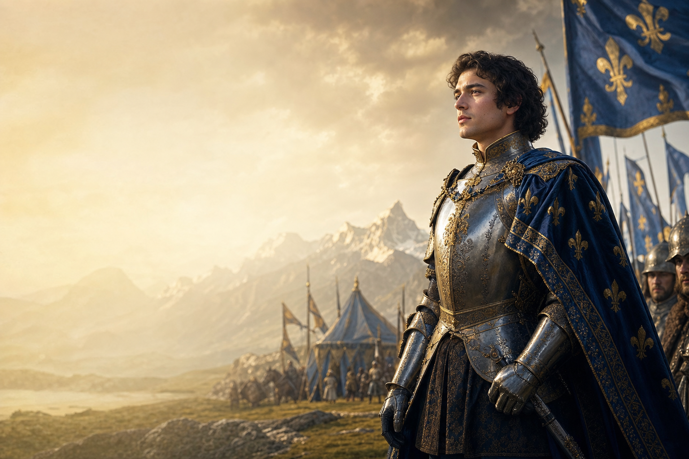
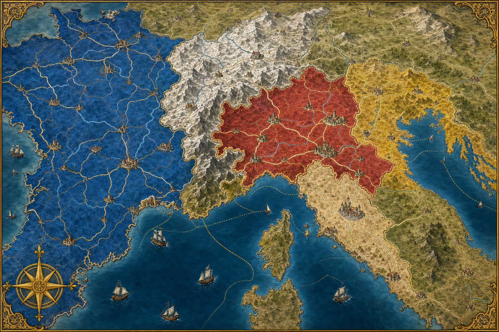
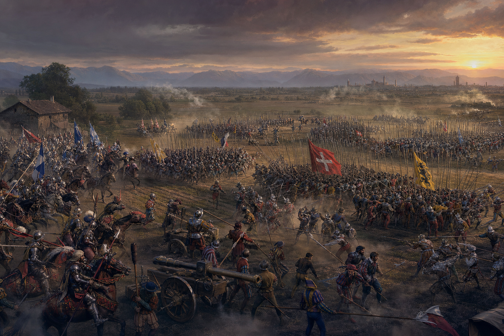

Une revendication dynastique
Les rois de France revendiquent le Milanais par l’héritage de Valentine Visconti.
13–14 septembre 1515 · près de Milan
Deux jours de fer, de feu et de diplomatie qui forgent la légende de François Ier.
Entrer dans l’Histoire ↓Acte I · L’avènement
François d’Angoulême succède à Louis XII le 1er janvier 1515. Âgé de vingt ans, formé aux armes et nourri de culture chevaleresque, il veut affirmer immédiatement sa légitimité par une victoire éclatante.
Par son arrière-grand-mère Valentine Visconti, la monarchie française revendique le duché de Milan. Le nouveau souverain rassemble une armée moderne : cavalerie lourde, fantassins français, mercenaires lansquenets et une artillerie mobile particulièrement puissante.
Cliquez une fois : le thème se déclenchera ensuite près du roi, à 10 %, avec fade in/out et arrivée du drop.

FRANÇOIS IERActe II · L’échiquier italien

Les rois de France revendiquent le Milanais par l’héritage de Valentine Visconti.
Milan commande les routes du nord de l’Italie et constitue une puissance économique majeure.
Face aux Suisses qui défendent le duc Maximilien Sforza, la France s’allie notamment à Venise.
Acte III · 13–14 septembre
Utilisez la frise ou le bouton Lecture pour suivre le déroulé.

Les colonnes suisses attaquent brusquement. L’artillerie française et les lansquenets tentent de briser leur élan.
Interlude jouable · Le champ de bataille
Une reconstitution stylisée pour comprendre l’espace, les charges suisses, le rôle de l’artillerie et l’arrivée vénitienne. Ce n’est pas une simulation exacte des effectifs.
Artillerie, gendarmes et lansquenets doivent absorber les assauts.
Des piquiers compacts cherchent à rompre le dispositif français.
Ils apparaissent au matin sur le flanc et contribuent au basculement.
Acte IV · Après les armes
François Ier entre à Milan. Maximilien Sforza abdique en échange d’une pension : la France contrôle momentanément le duché.
La France et les cantons suisses concluent à Fribourg une paix durable. Le recrutement de mercenaires suisses au service du roi est bientôt organisé.
Après sa rencontre avec Léon X, François Ier obtient un rôle décisif dans la nomination des évêques et abbés du royaume.
Adoubé autour de la bataille selon une tradition célèbre, François Ier transforme Marignan en récit fondateur. Cette gloire masque toutefois une domination française fragile en Italie.
« Une victoire éclatante, mais non la fin des guerres d’Italie. »
À vous de jouer
Prolonger le cours
Présentations prêtes à projeter et documents prêts à imprimer.